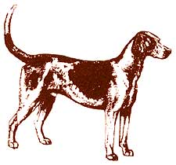
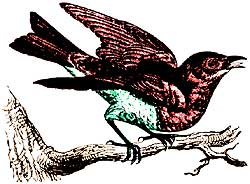

Help for the Handy
Useful tips from down-home readers
Through the years we've all discovered a few practical, time-tested solutions to some of the frustrating little problems of everyday life. Here are some of our readers' favorites. Send Mother your own suggestions.
The radiator in my car had a small leak, so my father told me to put in one or two teaspoons of pepper while the car was running. Sure enough, it plugged up the hole and lasted almost six months until I could afford another radiator.
-Sally Charles
West Springfield, Pennsylvania
Rather than using smelly kerosene or harsh gasoline to remove pine sap from your skin, try fingernail-polish remover. It does not burn or irritate the skin, and the sap comes off in a single wipe.
-Rhonda Dodson
Lynchburg, Virginia
During bad winter weather, I carry a bag of kitty litter in the car along with a shovel. Litter sprinkled under the drive wheels for traction has helped get me out of a number of slick spots.
-Russell W Mercer, Jr.
Bismarck, Missouri
Many large appliances, especially older models, are not equipped with casters. When my wife and I were getting ready to install a new kitchen floor, we had to pull the refrigerator, washer and dryer into the hallway, and while doing so noticed that the metal feet on the appliances made gouges in the linoleum. Wanting to protect our new flooring, I cut little pieces of carpet scrap, just slightly larger than the appliances' feet, and glued them on, backing side to the metal. I used a hot-glue gun, but any multipurpose adhesive ought to do. It worked perfectly, and we easily slid the heavy equipment into place with no damage to the new floor. Better yet, when we want to clean behind and underneath them, these metal monsters-weighing several hundred pounds each-can now be moved with very little effort.
-Timothy A. Inboden
Robinson, Illinois
If your garden tools' storage spot is prone to dampness, the implements' metal will rust. To prevent this, some people oil their tools, but I give mine-once they're clean-a coat of paste wax. It keeps them rust-free longer, and they're easier to clean up, too.
-K. C Drefke
Las Vegas, Nevada
To clean, deodorize and sanitize my microwave oven in one easy process, I add three-fourths of a cup of baking soda to a large plastic bowl filled with water. After "cooking" this in the oven for 20 minutes, I simply wipe the interior with paper towels. This solution leaves the oven smelling fresh.
-Wynell Witaker
Greenbrier, Tennessee
For those of us who live in the city or suburbs, tidying up after our pets' excursions outdoors can be made more pleasant with this tip. Take along a paper sack partially filled with sawdust, and use this to carry any waste until you can dispose of it. Southern yellow pine sawdust has a strong aromatic scent that offsets offensive odors, and you can usually obtain it free at a sawmill or lumberyard.
-Mark Mitchell
Murfreesboro, Tennessee
When washing plastic tablecloths and shower curtains, add a tablespoon of glycerine to the rinse water to keep the material soft and pliable. This treatment helps plastic articles last longer, too.
-Pat Juenemann
Clements, Minnesota
Sparrow Busters
During the winter I keep a corncob stuck in the entrance hole of every bluebird house. The cobs stay there till the sparrows (who build much earlier than bluebirds and who otherwise would set up housekeeping in the birdhouses) get discouraged and nest elsewhere. Often a holdout sparrow will try to take over a house after I've unplugged it, but by that time the bluebirds are in residence, and the male is a little scrapper who will hold his own against all comers.
-W.E. Frye
Elizabethtown, Kentucky
Before the spring garden gets planted, I make a batch of little "scare-sparrows." With a supply of corks and chicken feathers, I stick a feather into the end of each cork. After the seeds are in the ground, I tie the corks two feet apart onto strings that are stretched above the rows I want to protect. The slightest breeze keeps the feathers fluttering, scaring away the sparrows.
-Bobbie Mae Cooley
Bowen, Illinois
If your little ones are like mine, they want to pick out what to wear but usually end up with mismatched shirts and pants. Here's a little trick: Find some scraps of material in different colors (bright solids are best, and cut out a lot of little tags with pinking shears; simple circles are fine. Then, with the child's help, divide all the clothes into groups. For example, there may be four shirts that all match up with two pairs of pants; every piece in this group gets the same color of tag stitched in. Then, when your little one chooses what to wear, all he or she needs to do is find matching tags. Children think this is fun, and it gives them the confidence to make decisions. They look better, too.
-Lois E Klein-Miller
Gold Bar, Washington
It used to be that every time I removed the ashes from our fireplace, some of the fine particles became airborne and a cloud of dust later settled in the room. I've remedied this by lighting a crumpled sheet or two of newspaper in a rear corner of the fireplace just as I start to shovel out the ashes. The small, vigorous flame produces enough draft to draw the dust up the flue.
-Jerome Knapp
Menooka, Illinois
When I belt-sand a piece of wood-flat trim or shelving, for example-I often find hairline cracks and shallow imperfections. To eliminate these, I force white glue into the cracks and resand the surface. The sawdust fills the flaws and they disappear. Deeper ones may require several applications of glue, with a short drying period in between each treatment.
And did you know that the plastic lid from a one-pound coffee can fits a quart can of motor oil perfectly? The lid is a good way to keep dirt and dust out of the lubricant once the can has been opened-although several companies now sell oil in screw-top bottles.
-Fred A. Race
Euclid, Ohio
The best way I know to bait a mousetrap is to glue a kernel of field corn onto it. I once caught two mice at the same time in a single trap.
-Sharon Fritchley
Gentryville, Indiana
In our old farmhouse, the flies seem to swarm right out of the walls on sunny days. They collect on the warm windowpanes-to all appearances, half asleep. In fact, they're so sluggish I can suck them up with my rechargeable, hand-held vacuum. Then I empty it outdoors and let them fly away. It's great: No killing, no chasing around with a flyswatter like a maniac and no messy splats to clean up.
-Lakshmi Tacbe
St. Louis de Richelieu, Quebec
On those hot summer days when deerflies swarm around your head, take an old hardhat and smear dark grease on top. As the flies invade, they will land on the hat and get caught in the grease.
-Allen Mader
Medford, Wisconsin
If you're faced with a lot of flies outside your doors, put some chicken liver in the bottom of ajar with holes punched in the lid. Flies can get in, but they can't get out.
-Earl and Barbara Hodel
Little Falls, Minnesota
Send tips to: Country Lore,Mother Earth News, 8o Fifth Ave., New York, NY toots. Each published contributor will receive $20.
|
 |
 |
|